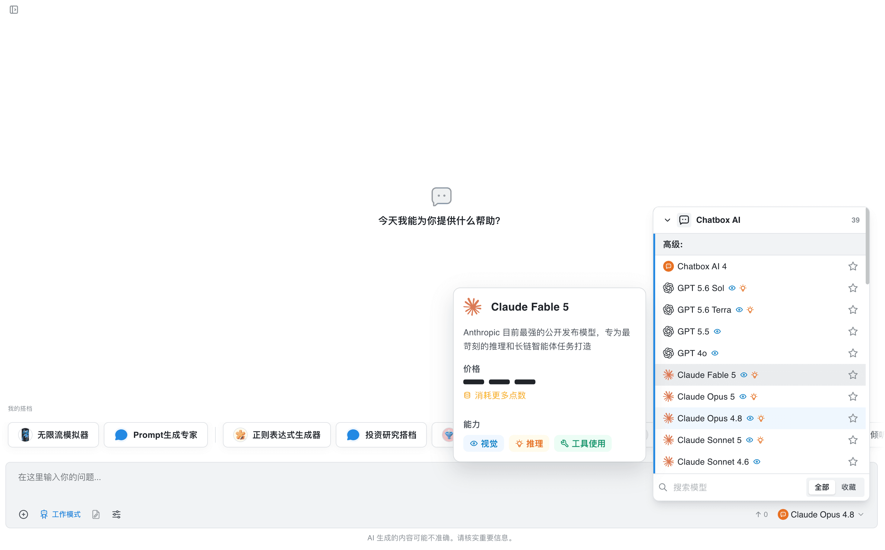
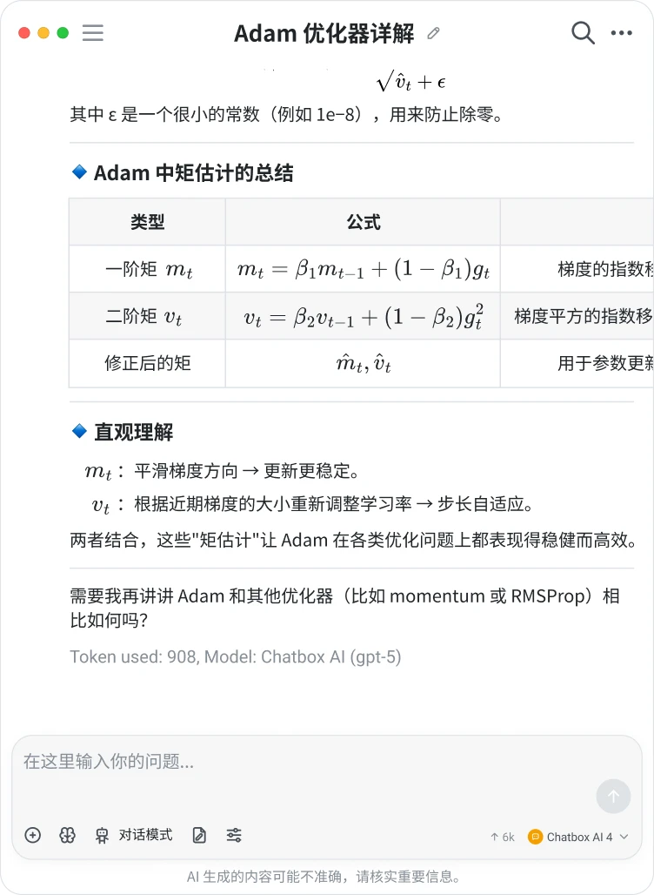

Chatbox 全能力盘点：从多模型接入到知识库对话的完整版图
深度盘点 Chatbox 的五大能力域——多模型灵活切换、回复渲染、数据导出、订阅策略与配额管理，帮你判断它到底适不适合放进你的工作流。
市面上 AI 客户端不少，但真正把"多模型接入 + 本地数据 + 灵活工作流"这三件事同时做扎实的并不多。Chatbox官网之所以在短时间内积累了一批忠实用户，恰恰是因为它在这几个维度上都没有明显短板——既可以当一个轻量的多模型对话台，也可以演进成日常生产力工具箱。这篇盘点就沿着能力域把它完整铺开。
多模型接入：三家巨头 + 聚合平台的自由切换
Chatbox 最先让人注意到的地方，就是它对模型提供方的支持面很广。OpenAI、Claude、Google Gemini 三家主力一个不落，接入方式也很直观：进到设置里选好提供方、贴 Key，右下角下拉菜单就能随时切模型。不用每次换模型都开一个新标签页，也不用在多套客户端之间来回迁移对话。
每家模型的"天然擅长"领域其实不一样，Chatbox 的优势在于它不绑定任何一家，让你按需挑选。日常综合问答、写文章这种场景，OpenAI 或 Claude 都能胜任；处理超长代码文件、精读长文档时，Claude 的长窗口显得从容；而 Gemini 的多模态能力和更长的上下文，在"喂图"和"整包资料一次给"的场景下尤其好用——截图找问题、让它读图表数据、把一本电子书拆给它精读，这些活儿交给 Gemini 会比纯文本模型省心。
如果你不想同时管理三家 API Key，聚合平台这条路也走得通——在一个账号下统一调度不同模型，省掉了 Key 管理的麻烦，代价是通常会多一层服务费。

回复渲染：让 AI 输出不只是文字
AI 的价值很大程度上取决于你能不能"读懂"它说的。纯文本堆砌的回复，不管写多长读起来都费劲。Chatbox 在渲染层做了一件务实的事：自动识别回复里的 Markdown、Mermaid 图表和 LaTeX 公式，把它们以图形化的形态呈现出来。
这个能力听起来像个"锦上添花"的细节，但实际用起来感受完全不同。让 AI 帮你理一个业务流程，你只需说"用 Mermaid 画一个流程图"，回复里的代码块会自动变成可阅读的流程图；写论文时问一个统计公式，LaTeX 排版出来比你自己手动输入规整得多；多方案对比时，Markdown 表格比大段文字说服力强不止一个档次。

渲染能力配合对话导出一起使用效果更好——导出成 Markdown 的对话里，这些图表和公式都还在，直接贴进文档或笔记软件就能用，省去了"截图再裁一遍"的重复劳动。
对话导出：两种格式各管一摊
聊了一轮高质量头脑风暴，或者调好了一个可以复用的完整对话，你肯定不想让它就这么留在对话历史里。Chatbox 提供了两种导出格式，分工很清晰：Markdown 管"留档与阅读"，JSON 管"备份与恢复"。
单场对话导出 Markdown 是最常用的场景——把一轮头脑风暴存进个人知识库、把调试成功的对话当复盘材料、把会议纪要草稿导出后继续加工，这些都是高频需求。Markdown 文件的好处是通用性强，任何笔记软件、文档库都能吃，甚至可以反向喂给你的知识库做后续检索。
全量数据导出 JSON 则是换机迁移和防灾备份的正路——它包含完整的结构化数据和配置，换机时导入一遍就能把历史、设置、知识库全搬过去。两者别混淆：单场导出管留档，全量导出管恢复，各司其职。
订阅与配额：先分清"真耗尽"还是"假耗尽"
月中就把点数用光的经历不少人都有过。Chatbox 的配额重置规则是按每月购买日重置——15 号订阅的就每月 15 号刷新，不是自然月。不过在急着补点数之前，先花两分钟排查一下是不是"假耗尽"。
三种常见的误判值得留意：一是工作模式下的 Agent 任务在后台跑，多轮调用消耗很快，看看是不是有长任务在悄悄吃点；二是模型档位挂错了，日常问答开着旗舰模型，点数消耗可能是标准模型的好几倍；三是对话上下文失控，超长对话每轮都要重复计费完整上下文，开新对话能省一大截。
确认是真耗尽了，三条路按急缓排：等免费重置、买扩充包立即到账、或者升级套餐长期解决。长期来看，偶尔月底超量适合买扩充包，每月固定超量该考虑升级，重度使用且对成本敏感的话，转 BYOK（Bring Your Own Key）按量付费反而可能更划算——安装包从官方下载拿好，贴自己的 API Key 就能绕过订阅点数的限制。
短板也要说
Chatbox 做得不错，但它也不是没有边界。多模型接入虽然广，但各家模型的能力差异、费率变动、窗口大小调整都不在它的控制范围内，重度用户需要自己跟进各平台的最新动态；渲染效果依赖模型本身的格式输出质量，如果模型"不听话"非要吐纯文字，客户端也无能为力；订阅制的点数模型对偶尔用的人可能不太友好，虽然有免费额度，但正经干活迟早会碰到配额问题。
另外，本地数据虽然给了用户掌控权，但也意味着备份和迁移的责任在你自己头上——记得定期导出全量 JSON，换设备时别漏了这一步，更多数据管理的完整步骤可以去Chatbox文档翻一下，里面有详细的备份恢复流程。
什么样的人该用它
综合上面这些能力和局限，三类人最能发挥 Chatbox 的优势。
第一类是需要频繁切换模型的多模型用户。日常写作用一个、处理代码换一个、看图又换一个——如果每个场景都开一个客户端，对话记录和配置会散得一塌糊涂。Chatbox 用一个窗口统一管三家，切换只需右下角点两下。
第二类是把 AI 当生产力工具而非玩具的重度用户。如果你每天都要让 AI 帮你理流程、写文档、做对比，回复渲染和对话导出这两个细节会直接影响你的输出质量和复用效率——聊完一轮就能沉淀进知识库，这比每次都手动复制粘贴要高效得多。
第三类是对数据隐私有要求的本地派。BYOK 模式让你用自己的 API Key 按量付费，数据走本地链路、备份由你自己掌控，不用把所有对话历史托管在第三方平台上。当然这需要你自己动手管理 Key 和配额，换来的是成本可控和数据自主。
总的来说，Chatbox 在客户端工具里走的是"实用主义路线"——没有花哨的噱头，把几个核心环节做扎实了。如果你刚好在找一个能同时满足多模型切换、本地数据管理和日常生产力需求的 AI 客户端，它值得放进你的工具清单里。我把这套资料同步维护在GitHub、Gitee、GitCode 三个仓库里，考虑到国内网络环境，按需取用就行。